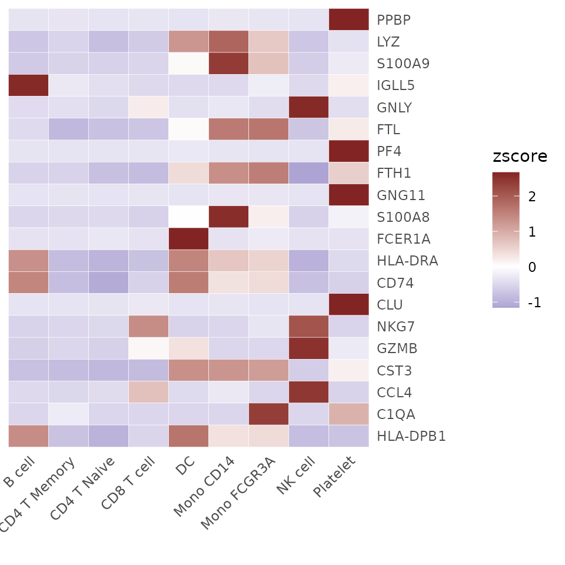
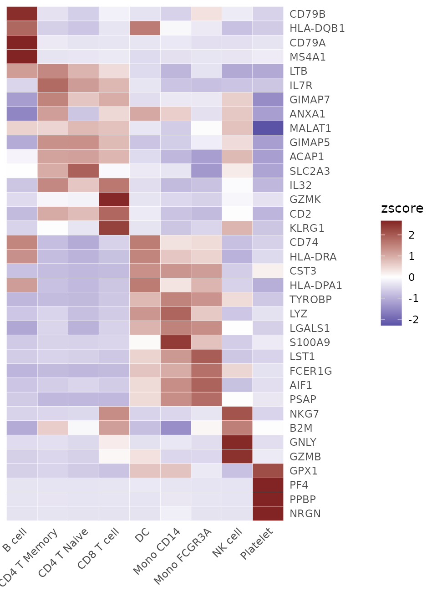
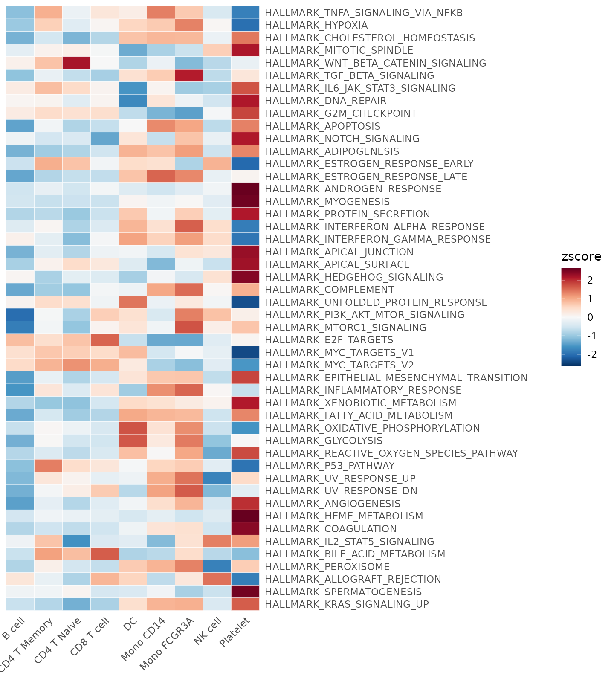
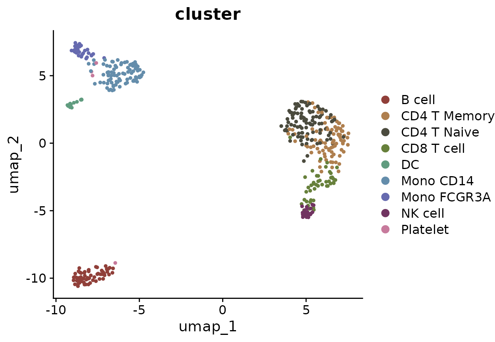

Utilities.RmdGene naming conventions can vary significantly between organisms and
databases, presenting a common challenge in scRNA-seq data analysis.
SeuratExtend includes several functions to facilitate the
conversion between human and mouse gene symbols and Ensembl IDs, as well
as conversions between human and mouse homologous gene symbols. These
functions leverage the biomaRt database for conversions but
improve on reliability and performance by localizing the most commonly
used databases, thus eliminating the need for internet connectivity and
addressing the frequent instability issues with
biomaRt.
The functions provided for these conversions are:
HumanToMouseGenesymbolMouseToHumanGenesymbolEnsemblToGenesymbolGenesymbolToEnsemblThese functions share a similar usage pattern, as detailed below
using HumanToMouseGenesymbol as an example.
First, let’s retrieve a few human gene symbols from a dataset as an example:
## Loading required package: SeuratObject## Loading required package: sp##
## Attaching package: 'SeuratObject'## The following objects are masked from 'package:base':
##
## intersect, t
library(SeuratExtend)## Loading required package: SeuratExtendData
human_genes <- VariableFeatures(pbmc)[1:6]
print(human_genes)## [1] "PPBP" "LYZ" "S100A9" "IGLL5" "GNLY" "FTL"By default, HumanToMouseGenesymbol returns a data frame
showing how human gene symbols (HGNC) match with mouse gene symbols
(MGI):
HumanToMouseGenesymbol(human_genes)## MGI.symbol HGNC.symbol
## 227 9530003J23Rik LYZ
## 6304 Ftl1 FTL
## 6305 Ftl1-ps1 FTL
## 8244 Gm5849 S100A9
## 15496 Ppbp PPBPThis table indicates that not all human genes have direct mouse homologs, and some human genes may correspond to multiple mouse genes.
If you prefer a simpler vector output without the matching details:
HumanToMouseGenesymbol(human_genes, match = FALSE)## [1] "9530003J23Rik" "Ftl1" "Ftl1-ps1" "Gm5849"
## [5] "Ppbp"For cases where you require a one-to-one correspondence:
HumanToMouseGenesymbol(human_genes, keep.seq = TRUE)## PPBP LYZ S100A9 IGLL5 GNLY
## "Ppbp" "9530003J23Rik" "Gm5849" NA NA
## FTL
## "Ftl1"These functions can also directly convert human gene expression matrices to their mouse counterparts:
# Create an example gene expression matrix
human_matr <- GetAssayData(pbmc)[human_genes, 1:4]
print(human_matr)## 6 x 4 sparse Matrix of class "dgCMatrix"
## CTATAAGATCGTTT-1 GTGATTCTGGTTCA-1 ACGTTGGACCGTAA-1 GGATACTGCAGCTA-1
## PPBP . . . .
## LYZ . . 5.203442 2.145600
## S100A9 . . 3.615756 .
## IGLL5 . . . .
## GNLY . 5.301497 . .
## FTL 3.804611 3.441956 6.284984 3.656766
# Convert to a mouse gene expression matrix
HumanToMouseGenesymbol(human_matr)## 4 x 4 sparse Matrix of class "dgCMatrix"
## CTATAAGATCGTTT-1 GTGATTCTGGTTCA-1 ACGTTGGACCGTAA-1
## Ppbp . . .
## 9530003J23Rik . . 5.203442
## Gm5849 . . 3.615756
## Ftl1 3.804611 3.441956 6.284984
## GGATACTGCAGCTA-1
## Ppbp .
## 9530003J23Rik 2.145600
## Gm5849 .
## Ftl1 3.656766The usage patterns for the other conversion functions in
SeuratExtend, such as MouseToHumanGenesymbol,
GenesymbolToEnsembl, and EnsemblToGenesymbol,
are similar to those already discussed. These functions also leverage
local databases to enhance performance and reliability but provide
options to use online databases via biomaRt if
necessary.
Here are some examples demonstrating the use of other gene naming conversion functions:
# Converting mouse gene symbols to human
mouse_genes <- c("Cd14", "Cd3d", "Cd79a")
MouseToHumanGenesymbol(mouse_genes, match = FALSE)## [1] "CD14" "CD3D" "CD79A"
# Converting human gene symbols to Ensembl IDs
human_genes <- c("PPBP", "LYZ", "S100A9", "IGLL5", "GNLY", "FTL")
GenesymbolToEnsembl(human_genes, spe = "human", keep.seq = TRUE)## PPBP LYZ S100A9 IGLL5
## "ENSG00000163736" "ENSG00000090382" "ENSG00000163220" "ENSG00000254709"
## GNLY FTL
## "ENSG00000115523" "ENSG00000087086"
# Converting mouse gene symbols to Ensembl IDs
GenesymbolToEnsembl(mouse_genes, spe = "mouse", keep.seq = TRUE)## Cd14 Cd3d Cd79a
## "ENSMUSG00000051439" "ENSMUSG00000032094" "ENSMUSG00000003379"
# Converting Ensembl IDs to human gene symbols
EnsemblToGenesymbol(c("ENSG00000163736", "ENSG00000090382"), spe = "human", keep.seq = TRUE)## ENSG00000163736 ENSG00000090382
## "PPBP" "LYZ"
# Converting Ensembl IDs to mouse gene symbols
EnsemblToGenesymbol(c("ENSMUSG00000051439", "ENSMUSG00000032094"), spe = "mouse", keep.seq = TRUE)## ENSMUSG00000051439 ENSMUSG00000032094
## "Cd14" "Cd3d"While SeuratExtend typically uses localized databases
for conversions, you have the option to directly fetch results from
biomaRt databases if required. This can be useful when
working with less common genes or newer annotations not yet available in
the local database:
# Fetching Ensembl IDs for human genes directly from biomaRt
GenesymbolToEnsembl(human_genes, spe = "human", local.mode = FALSE, keep.seq = TRUE)In addition to facilitating gene symbol and Ensembl ID conversions
between human and mouse, SeuratExtend also includes
functionality to convert UniProt IDs, which are widely used in proteomic
databases, to gene symbols. This can be particularly useful when
integrating proteomic and genomic data or when working with databases
that use UniProt identifiers.
The function UniprotToGenesymbol in
SeuratExtend provides a straightforward way to translate
UniProt IDs into gene symbols. This function supports both human and
mouse species, accommodating research that spans multiple types of
biological data. Here’s how you can convert UniProt IDs to gene symbols
for both human and mouse:
# Converting UniProt IDs to human gene symbols
UniprotToGenesymbol(c("Q8NF67", "Q9NPB9"), spe = "human")## [1] "ANKRD20A12P" "ACKR4"
# Converting UniProt IDs to mouse gene symbols
UniprotToGenesymbol(c("Q9R1C8", "Q9QY84"), spe = "mouse")## [1] "Htr6" "Actl7a"The CalcStats function from the
SeuratExtend package provides a comprehensive approach to
compute various statistics, such as mean, median, z-scores, or LogFC,
for genomic data. This function can handle data stored in Seurat objects
or standard matrices, allowing for versatile analyses tailored to
single-cell datasets.
Whether you’re analyzing genes or pathways, CalcStats
simplifies the task by computing statistics for selected features across
different cell groups or clusters.
Begin by selecting a subset of features, such as genes. For this example, let’s pick the first 20 variable features from a Seurat object:
library(Seurat)
library(SeuratExtend)
genes <- VariableFeatures(pbmc)[1:20]Using CalcStats, compute your desired metric, like
z-scores, for each feature across different cell clusters:
genes.zscore <- CalcStats(pbmc, features = genes, method = "zscore", group.by = "cluster")
head(genes.zscore)## B cell CD4 T Memory CD4 T Naive CD8 T cell DC Mono CD14
## PPBP -0.3371314 -0.3304297 -0.3504324 -0.3241762 -0.35043243 -0.3026097
## LYZ -0.7086608 -0.5312264 -0.7989052 -0.6494664 1.25840432 1.8734207
## S100A9 -0.6585180 -0.5422840 -0.5670929 -0.5281999 0.06906373 2.3873809
## IGLL5 2.6061006 -0.2791647 -0.3973560 -0.4712923 -0.47129230 -0.4712923
## GNLY -0.4437914 -0.3985860 -0.4761490 0.2209286 -0.38933003 -0.2937568
## FTL -0.4544019 -0.8814705 -0.7728842 -0.7232855 0.05204804 1.6055627
## Mono FCGR3A NK cell Platelet
## PPBP -0.3206744 -0.3504324 2.6663186
## LYZ 0.6437754 -0.7119758 -0.3753658
## S100A9 0.7169325 -0.6237505 -0.2535318
## IGLL5 -0.2258753 -0.4712923 0.1814646
## GNLY -0.4197184 2.6058127 -0.4054095
## FTL 1.6557236 -0.7193185 0.2380262Display the computed statistics using a heatmap:
Heatmap(genes.zscore, lab_fill = "zscore")
Select more genes and retain the top 4 genes of each cluster, sorted by p-value. This can be a convenient method to display the top marker genes of each cluster:
genes <- VariableFeatures(pbmc)
genes.zscore <- CalcStats(
pbmc, features = genes, method = "zscore", group.by = "cluster",
order = "p", n = 4)
Heatmap(genes.zscore, lab_fill = "zscore")
For instance, you might perform Enrichment Analysis (GSEA) using the Hallmark 50 geneset and obtain the AUCell matrix (rows represent pathways, columns represent cells):
pbmc <- GeneSetAnalysis(pbmc, genesets = hall50$human)
matr <- pbmc@misc$AUCell$genesetsUsing the matrix, compute the z-scores for the genesets across various cell clusters:
gsea.zscore <- CalcStats(matr, f = pbmc$cluster, method = "zscore")Present the z-scores using a heatmap:
Heatmap(gsea.zscore, lab_fill = "zscore")
This section describes how to utilize the
feature_percent function in the SeuratExtend
package to determine the proportion of positive cells within specified
clusters or groups based on defined criteria. This function is
particularly useful for identifying the expression levels of genes or
other features within subpopulations of cells in scRNA-seq datasets.
To calculate the proportion of positive cells for the top 5 variable features in a Seurat object:
library(SeuratExtend)
genes <- VariableFeatures(pbmc)[1:5]
# Default usage
proportions <- feature_percent(pbmc, feature = genes)##
## Attaching package: 'rlist'## The following object is masked from 'package:S4Vectors':
##
## List
print(proportions)## B cell CD4 T Memory CD4 T Naive CD8 T cell DC Mono CD14
## PPBP 0.01492537 0.02247191 0.00000000 0.02173913 0.0000000 0.05050505
## LYZ 0.43283582 0.61797753 0.37931034 0.50000000 0.9333333 1.00000000
## S100A9 0.05970149 0.16853933 0.12931034 0.17391304 0.4666667 1.00000000
## IGLL5 0.20895522 0.02247191 0.00862069 0.00000000 0.0000000 0.00000000
## GNLY 0.05970149 0.08988764 0.02586207 0.32608696 0.1333333 0.15151515
## Mono FCGR3A NK cell Platelet
## PPBP 0.03333333 0.00000000 1.00000000
## LYZ 1.00000000 0.45833333 0.50000000
## S100A9 0.86666667 0.08333333 0.28571429
## IGLL5 0.03333333 0.00000000 0.07142857
## GNLY 0.10000000 0.95833333 0.07142857This will return a matrix where rows are features and columns are clusters, showing the proportion of cells in each cluster where the feature’s expression is above the default threshold (0).
To count a cell as positive only if its expression is above a value of 2:
proportions_above_2 <- feature_percent(pbmc, feature = genes, above = 2)
print(proportions_above_2)## B cell CD4 T Memory CD4 T Naive CD8 T cell DC Mono CD14
## PPBP 0.00000000 0.00000000 0.00000000 0.02173913 0.0000000 0.02020202
## LYZ 0.20895522 0.23595506 0.14655172 0.15217391 0.8666667 1.00000000
## S100A9 0.00000000 0.01123596 0.03448276 0.02173913 0.2666667 1.00000000
## IGLL5 0.08955224 0.00000000 0.00000000 0.00000000 0.0000000 0.00000000
## GNLY 0.00000000 0.00000000 0.00862069 0.23913043 0.0000000 0.07070707
## Mono FCGR3A NK cell Platelet
## PPBP 0.0000000 0.0000000 1.00000000
## LYZ 0.9000000 0.1250000 0.42857143
## S100A9 0.6333333 0.0000000 0.14285714
## IGLL5 0.0000000 0.0000000 0.00000000
## GNLY 0.0000000 0.9583333 0.07142857To calculate proportions for only a subset of clusters:
proportions_subset <- feature_percent(pbmc, feature = genes, ident = c("B cell", "CD8 T cell"))
print(proportions_subset)## B cell CD8 T cell
## PPBP 0.01492537 0.02173913
## LYZ 0.43283582 0.50000000
## S100A9 0.05970149 0.17391304
## IGLL5 0.20895522 0.00000000
## GNLY 0.05970149 0.32608696If you wish to group cells by a different variable other than the default cluster identities:
proportions_by_ident <- feature_percent(pbmc, feature = genes, group.by = "orig.ident")
print(proportions_by_ident)## sample1 sample2
## PPBP 0.03571429 0.05421687
## LYZ 0.60119048 0.63554217
## S100A9 0.35119048 0.36445783
## IGLL5 0.03571429 0.03915663
## GNLY 0.13690476 0.15361446To also check the proportion of expressed cells in total across selected clusters:
proportions_total <- feature_percent(pbmc, feature = genes, total = TRUE)
print(proportions_total)## B cell CD4 T Memory CD4 T Naive CD8 T cell DC Mono CD14
## PPBP 0.01492537 0.02247191 0.00000000 0.02173913 0.0000000 0.05050505
## LYZ 0.43283582 0.61797753 0.37931034 0.50000000 0.9333333 1.00000000
## S100A9 0.05970149 0.16853933 0.12931034 0.17391304 0.4666667 1.00000000
## IGLL5 0.20895522 0.02247191 0.00862069 0.00000000 0.0000000 0.00000000
## GNLY 0.05970149 0.08988764 0.02586207 0.32608696 0.1333333 0.15151515
## Mono FCGR3A NK cell Platelet total
## PPBP 0.03333333 0.00000000 1.00000000 0.048
## LYZ 1.00000000 0.45833333 0.50000000 0.624
## S100A9 0.86666667 0.08333333 0.28571429 0.360
## IGLL5 0.03333333 0.00000000 0.07142857 0.038
## GNLY 0.10000000 0.95833333 0.07142857 0.148For scenarios where you need a logical output indicating whether a significant proportion of cells are expressing the feature above a certain level (e.g., 20%):
expressed_logical <- feature_percent(pbmc, feature = genes, if.expressed = TRUE, min.pct = 0.2)
print(expressed_logical)## B cell CD4 T Memory CD4 T Naive CD8 T cell DC Mono CD14 Mono FCGR3A
## PPBP FALSE FALSE FALSE FALSE FALSE FALSE FALSE
## LYZ TRUE TRUE TRUE TRUE TRUE TRUE TRUE
## S100A9 FALSE FALSE FALSE FALSE TRUE TRUE TRUE
## IGLL5 TRUE FALSE FALSE FALSE FALSE FALSE FALSE
## GNLY FALSE FALSE FALSE TRUE FALSE FALSE FALSE
## NK cell Platelet
## PPBP FALSE TRUE
## LYZ TRUE TRUE
## S100A9 FALSE TRUE
## IGLL5 FALSE FALSE
## GNLY TRUE FALSEThe RunBasicSeurat function in the
SeuratExtend package automates the execution of a standard
Seurat pipeline for single-cell RNA sequencing data analysis. This
comprehensive function includes steps such as normalization, PCA,
clustering, and optionally integrates batch effects using Harmony. This
automation is designed to streamline the analysis process, making it
more efficient and reproducible.
The Seurat pipeline typically includes the following steps, which are
all encapsulated within the RunBasicSeurat function:
For a comprehensive tutorial on the standard Seurat workflow, refer to the official Seurat PBMC tutorial.
RunBasicSeurat
Below are examples demonstrating how to use the
RunBasicSeurat function to process scRNA-seq data:
library(SeuratExtend)
# Run the full pipeline with forced normalization and default parameters
pbmc <- RunBasicSeurat(pbmc, force.Normalize = TRUE)## Centering and scaling data matrix## PC_ 1
## Positive: CST3, TYROBP, FTH1, LST1, AIF1, FCER1G, FTL, CFD, TYMP, LYZ
## S100A9, LGALS1, FCN1, SPI1, CD68, COTL1, PSAP, CTSS, SERPINA1, SAT1
## S100A11, IFITM3, AP1S2, IFI30, S100A8, LGALS2, NPC2, LGALS3, GPX1, OAZ1
## Negative: MALAT1, RPS27A, LTB, IL32, TPT1, CXCR4, IL7R, B2M, CTSW, RARRES3
## GZMA, TRAF3IP3, NOSIP, CST7, PRDX2, MYL12A, AQP3, RPL34, FAIM3, GIMAP5
## PPP2R5C, GIMAP7, MAL, PRF1, CD8B, ITM2A, CCL5, HOPX, SAMD3, OPTN
## PC_ 2
## Positive: AP001189.4, GP9, ACRBP, TMEM40, CLDN5, PTCRA, CLEC1B, LY6G6F, AC147651.3, TUBA8
## PCP2, SDPR, HIST1H2AC, TSC22D1, C2orf88, PF4, CMTM5, PPBP, GNG11, ESAM
## MMD, SPOCD1, GP6, TMCC2, ENKUR, ASAP2, AC137932.6, LGALSL, MYLK, LCN2
## Negative: LYZ, S100A9, LGALS2, FCN1, TYROBP, AIF1, IFI30, CST3, S100A8, LST1
## MS4A6A, CTSS, CD14, NCF2, LGALS1, AP1S2, FTL, S100A6, S100A11, RGS2
## TYMP, PYCARD, IFITM3, FCER1G, CD68, FTH1, ALDH2, PSAP, CYBA, CTSB
## PC_ 3
## Positive: NKG7, GZMA, CST7, PRF1, B2M, CTSW, S100A4, GNLY, FGFBP2, GZMB
## KLRD1, SPON2, GZMH, CCL4, CCL5, XCL2, PFN1, FCGR3A, HOPX, RARRES3
## IL32, CLIC3, TMSB4X, XCL1, AKR1C3, S1PR5, TPST2, GIMAP7, SRGN, ITGB2
## Negative: CD79A, HLA-DQA1, TCL1A, HLA-DQB1, MS4A1, LINC00926, HLA-DRA, CD79B, CD74, HLA-DPB1
## VPREB3, HLA-DPA1, FCER2, HLA-DRB5, HLA-DQA2, HLA-DRB1, HLA-DMA, CD37, TSPAN13, KIAA0125
## HLA-DOB, BLNK, SPIB, PKIG, FCRLA, BLK, BTK, PNOC, CD180, PDLIM1
## PC_ 4
## Positive: GZMB, SERPINF1, CLIC3, PLD4, LILRA4, NKG7, FGFBP2, GNLY, CLEC4C, CST7
## PRF1, MZB1, KLRD1, SPON2, GZMH, HLA-DQA1, GZMA, PLAC8, FCGR3A, IRF8
## TIFAB, CD74, PTGDS, IL3RA, CCL4, TSPAN13, XCL2, IGJ, HLA-DPA1, C12orf75
## Negative: IL7R, S100A8, VIM, S100A9, MAL, S100A10, CD40LG, CD14, NOSIP, C6orf48
## LGALS2, GIMAP5, RGS10, AQP3, ANP32B, LTB, FLT3LG, GIMAP4, IL32, RBP7
## NGFRAP1, TMSB4X, LGALS3BP, FHIT, NDFIP1, FOLR3, FCN1, AIF1, AC013264.2, GIMAP7
## PC_ 5
## Positive: FCGR3A, CDKN1C, CKB, SIGLEC10, HES4, MS4A7, RHOC, CD79B, CTD-2006K23.1, LILRA3
## RP11-290F20.3, CSF1R, MS4A4A, LRRC25, IFITM2, PAPSS2, LILRB1, FAM110A, BATF3, VMO1
## PPM1N, EMR2, CXCL16, TESC, MTSS1, INSIG1, CEACAM3, ZNF703, GSTA4, EMR1
## Negative: SERPINF1, LILRA4, GPX1, CLEC4C, PPP1R14B, GAS6, TIFAB, LGALS2, GRN, SCT
## CUEDC1, LRRC26, S100A8, MS4A6A, IL3RA, APP, SMPD3, ALDH2, GSN, GSTP1
## RPS6KA4, CD14, CD33, FAM213A, ZNF789, ZFAT, LYZ, ASGR1, LAMP5, VIM## Using 'pca' as the reduction method for FindNeighbors, FindClusters, and RunUMAP.## Computing nearest neighbor graph## Computing SNN## Modularity Optimizer version 1.3.0 by Ludo Waltman and Nees Jan van Eck
##
## Number of nodes: 452
## Number of edges: 14235
##
## Running Louvain algorithm...
## Maximum modularity in 10 random starts: 0.8333
## Number of communities: 5
## Elapsed time: 0 seconds## Warning: The default method for RunUMAP has changed from calling Python UMAP via reticulate to the R-native UWOT using the cosine metric
## To use Python UMAP via reticulate, set umap.method to 'umap-learn' and metric to 'correlation'
## This message will be shown once per session## 10:22:00 UMAP embedding parameters a = 0.9922 b = 1.112## 10:22:00 Read 452 rows and found 10 numeric columns## 10:22:00 Using Annoy for neighbor search, n_neighbors = 30## 10:22:00 Building Annoy index with metric = cosine, n_trees = 50## 0% 10 20 30 40 50 60 70 80 90 100%## [----|----|----|----|----|----|----|----|----|----|## **************************************************|
## 10:22:00 Writing NN index file to temp file /tmp/RtmpCvLAoI/file34781171227952
## 10:22:00 Searching Annoy index using 1 thread, search_k = 3000
## 10:22:00 Annoy recall = 100%
## 10:22:01 Commencing smooth kNN distance calibration using 1 thread with target n_neighbors = 30
## 10:22:02 Initializing from normalized Laplacian + noise (using RSpectra)
## 10:22:02 Commencing optimization for 500 epochs, with 16790 positive edges
## 10:22:02 Optimization finished
# Visualize the clusters using DimPlot
DimPlot2(pbmc, group.by = "cluster")## The 'I want hue' color presets were generated from: https://medialab.github.io/iwanthue/
## This message is shown once per session
## Loading required package: cowplot
##
## Attaching package: 'cowplot'
##
## The following object is masked from 'package:mosaic':
##
## theme_map
The function allows for extensive customization of each step through various parameters:
spe: Specifies the species (human or
mouse) for mitochondrial calculations.nFeature_RNA.min and
nFeature_RNA.max: Define the range of RNA features
considered for each cell.percent.mt.max: Sets the maximum
allowed mitochondrial gene expression percentage.dims: Determines the number of
dimensions used in PCA and neighbor finding.resolution: Adjusts the granularity of
the clustering algorithm.reduction: Chooses the dimensional
reduction technique, with options for PCA or Harmony.harmony.by: Specifies the metadata
column for batch correction when using Harmony.RunBasicSeurat intelligently decides whether to re-run
certain steps based on parameter changes or previous executions:
force.* Parameters: Each
force parameter (e.g., force.Normalize,
force.RunPCA) overrides the function’s internal checks,
ensuring that specific steps are executed regardless of prior results.
This feature is particularly useful when parameters are adjusted or when
updates to the dataset require reanalysis.The RunBasicSeurat function simplifies the execution of
a comprehensive scRNA-seq data analysis pipeline, incorporating advanced
features such as conditional execution and batch effect integration.
This function ensures that users can efficiently process their data
while maintaining flexibility to adapt the analysis to specific
requirements.
## R version 4.4.0 (2024-04-24)
## Platform: x86_64-pc-linux-gnu
## Running under: Ubuntu 20.04.6 LTS
##
## Matrix products: default
## BLAS: /usr/lib/x86_64-linux-gnu/blas/libblas.so.3.9.0
## LAPACK: /usr/lib/x86_64-linux-gnu/lapack/liblapack.so.3.9.0
##
## locale:
## [1] LC_CTYPE=en_US.UTF-8 LC_NUMERIC=C
## [3] LC_TIME=de_BE.UTF-8 LC_COLLATE=en_US.UTF-8
## [5] LC_MONETARY=de_BE.UTF-8 LC_MESSAGES=en_US.UTF-8
## [7] LC_PAPER=de_BE.UTF-8 LC_NAME=C
## [9] LC_ADDRESS=C LC_TELEPHONE=C
## [11] LC_MEASUREMENT=de_BE.UTF-8 LC_IDENTIFICATION=C
##
## time zone: Europe/Brussels
## tzcode source: system (glibc)
##
## attached base packages:
## [1] stats4 stats graphics grDevices utils datasets methods
## [8] base
##
## other attached packages:
## [1] cowplot_1.1.3 rlist_0.4.6.2
## [3] DelayedMatrixStats_1.26.0 DelayedArray_0.30.1
## [5] SparseArray_1.4.8 S4Arrays_1.4.1
## [7] abind_1.4-5 IRanges_2.38.0
## [9] S4Vectors_0.42.0 MatrixGenerics_1.16.0
## [11] matrixStats_1.3.0 BiocGenerics_0.50.0
## [13] rlang_1.1.4 scales_1.3.0
## [15] reshape2_1.4.4 mosaic_1.9.1
## [17] mosaicData_0.20.4 ggformula_0.12.0
## [19] Matrix_1.7-0 ggplot2_3.5.1
## [21] lattice_0.22-6 dplyr_1.1.4
## [23] SeuratExtend_1.0.0 SeuratExtendData_0.2.0
## [25] Seurat_5.1.0 SeuratObject_5.0.2
## [27] sp_2.1-4
##
## loaded via a namespace (and not attached):
## [1] RColorBrewer_1.1-3 rstudioapi_0.16.0 jsonlite_1.8.8
## [4] magrittr_2.0.3 spatstat.utils_3.0-4 farver_2.1.2
## [7] rmarkdown_2.27 zlibbioc_1.50.0 fs_1.6.4
## [10] ragg_1.3.2 vctrs_0.6.5 ROCR_1.0-11
## [13] memoise_2.0.1 spatstat.explore_3.2-7 forcats_1.0.0
## [16] htmltools_0.5.8.1 haven_2.5.4 sass_0.4.9
## [19] sctransform_0.4.1 parallelly_1.37.1 KernSmooth_2.23-24
## [22] bslib_0.7.0 htmlwidgets_1.6.4 desc_1.4.3
## [25] ica_1.0-3 plyr_1.8.9 plotly_4.10.4
## [28] zoo_1.8-12 cachem_1.1.0 igraph_1.3.4
## [31] mime_0.12 lifecycle_1.0.4 pkgconfig_2.0.3
## [34] R6_2.5.1 fastmap_1.2.0 fitdistrplus_1.1-11
## [37] future_1.33.2 shiny_1.8.1.1 digest_0.6.35
## [40] colorspace_2.1-0 patchwork_1.2.0 tensor_1.5
## [43] RSpectra_0.16-1 irlba_2.3.5.1 textshaping_0.4.0
## [46] labeling_0.4.3 progressr_0.14.0 fansi_1.0.6
## [49] spatstat.sparse_3.0-3 httr_1.4.7 polyclip_1.10-6
## [52] compiler_4.4.0 withr_3.0.0 fastDummies_1.7.3
## [55] highr_0.11 MASS_7.3-60.2 tools_4.4.0
## [58] lmtest_0.9-40 httpuv_1.6.15 future.apply_1.11.2
## [61] goftest_1.2-3 glue_1.7.0 nlme_3.1-165
## [64] promises_1.3.0 grid_4.4.0 Rtsne_0.17
## [67] cluster_2.1.6 generics_0.1.3 gtable_0.3.5
## [70] spatstat.data_3.0-4 labelled_2.13.0 tidyr_1.3.1
## [73] hms_1.1.3 data.table_1.15.4 XVector_0.44.0
## [76] utf8_1.2.4 spatstat.geom_3.2-9 RcppAnnoy_0.0.22
## [79] ggrepel_0.9.5 RANN_2.6.1 pillar_1.9.0
## [82] stringr_1.5.1 spam_2.10-0 RcppHNSW_0.6.0
## [85] later_1.3.2 splines_4.4.0 survival_3.7-0
## [88] deldir_2.0-4 tidyselect_1.2.1 miniUI_0.1.1.1
## [91] pbapply_1.7-2 knitr_1.47 gridExtra_2.3
## [94] scattermore_1.2 xfun_0.44 mosaicCore_0.9.4.0
## [97] stringi_1.8.4 lazyeval_0.2.2 yaml_2.3.8
## [100] evaluate_0.23 codetools_0.2-20 tibble_3.2.1
## [103] cli_3.6.2 uwot_0.2.2 xtable_1.8-4
## [106] reticulate_1.37.0 systemfonts_1.1.0 munsell_0.5.1
## [109] jquerylib_0.1.4 Rcpp_1.0.12 globals_0.16.3
## [112] spatstat.random_3.2-3 png_0.1-8 parallel_4.4.0
## [115] pkgdown_2.0.9 dotCall64_1.1-1 sparseMatrixStats_1.16.0
## [118] listenv_0.9.1 viridisLite_0.4.2 ggridges_0.5.6
## [121] crayon_1.5.2 leiden_0.4.3.1 purrr_1.0.2